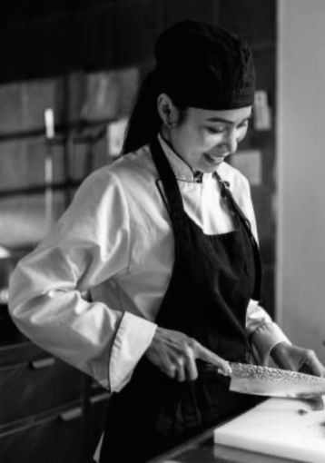

Hjernerne bag Nippons
autentiske opskrifter.
Nobu Matsuhisa 松久信幸
En dedikeret kok med sans for detaljen, og hvor kvaliteten
er i højsædet.
Han er mest kendt for sin rolle som ejer og chefkok på Sukiyabashi Jiro, en Michelin-trestjernet sushi-restaurant beliggende i Tokyo, Japan. Jiro Ono har opnået international anerkendelse for sin dedikation til kunsten at lave sushi og er kendt for sin præcision og perfektionisme inden for sushi-kunsten.
“I always strive to be the best.”
Yoshiko Hattori 服部良子
En anerkendt kok, som forener forskellige smagsnuancer, teknikker og kulturer for at skabe kulinarisk kunst."
Yoshiko Hattori er en velkendt kok og tv-personlighed i Japan. Hun har erfaring inden for både japansk og vestlig køkkenkunst og har optrådt i forskellige madrelaterede tv-programmer. Hattori er kendt for sin ekspertise inden for madlavning og sin evne til at formidle madkultur.
"Embrace the diversity of flavors, techniques, and cultures in the world of cuisine.”
